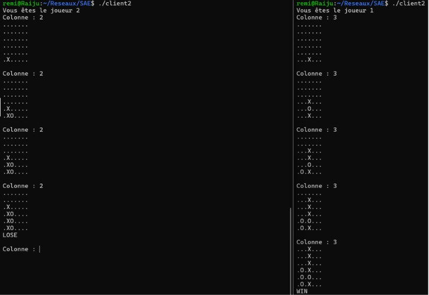
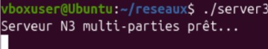

Projet portant sur l’adressage IP.


Cette SAE consistait à développer un jeu jouable en réseau en programmant un serveur et plusieurs clients capables de communiquer via des sockets TCP. Le serveur gérait la logique du jeu, la synchronisation des joueurs, la validation des actions et l’envoi des mises à jour. Les clients envoyaient les commandes du joueur et recevaient l’état du jeu en temps réel. Le projet m’a permis de comprendre concrètement le fonctionnement des communications réseau, la gestion des sockets, les protocoles d’échange, ainsi que la structure d’une application client/serveur complète.